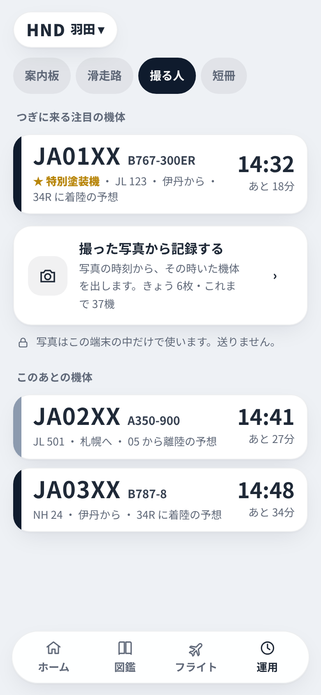
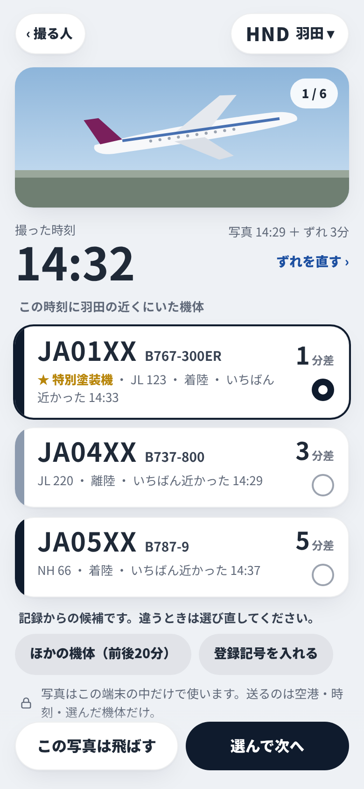
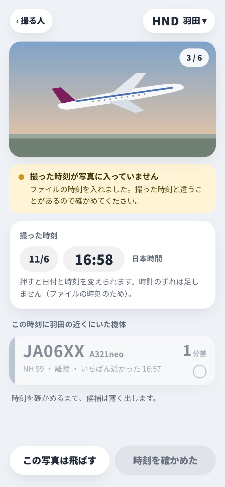
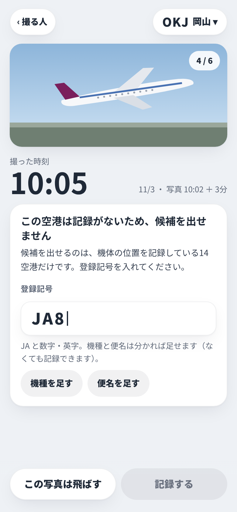
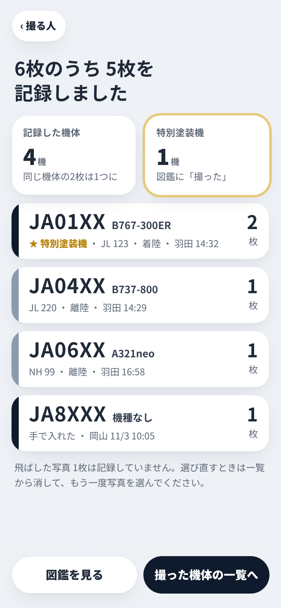
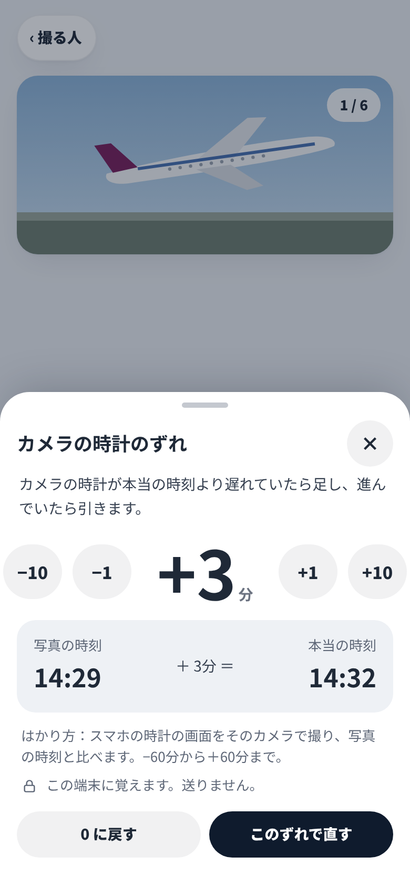
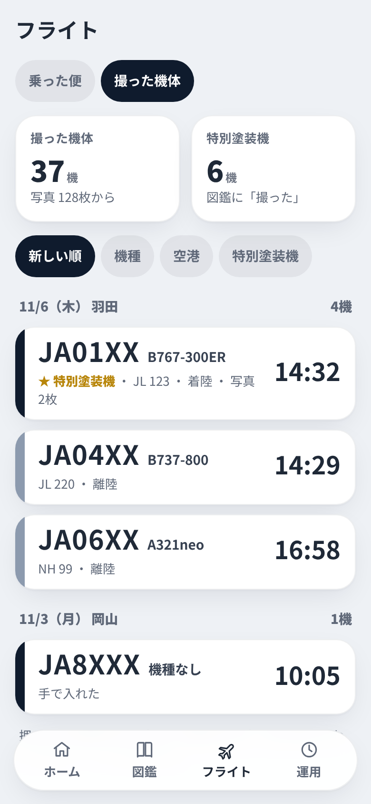
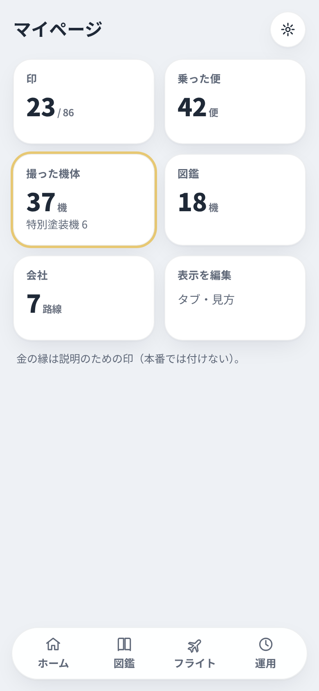
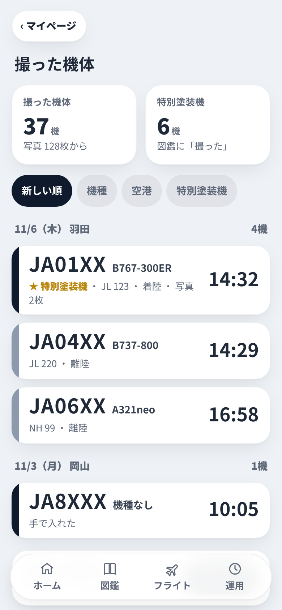

撮る人用担当の仕様 spec-photo-log.md（PR #24）の 3・4 と依頼 9-1 から。写真から候補を出して本人が選ぶ。写真と写真の位置は送らない。明るい表示だけ。報告は docs/pm/report-photo-log.md。

入口運用タブ「撮る人」の中
候補を選ぶ写真・直した時刻・候補3つ
時刻が読めない写真ファイルの時刻を確かめてもらう
記録のない空港候補なし・登録記号を入れる
全部選んだあと何枚記録したか・特別塗装機
時計のずれ分の増減・見本の1行
一覧（案1：フライトタブ）乗った便／撮った機体の切り替え
一覧（案2）入口：マイページのタイル「撮った機体 37機」のタイル
一覧（案2）：タイルから開いた一覧中身は案1と同じ